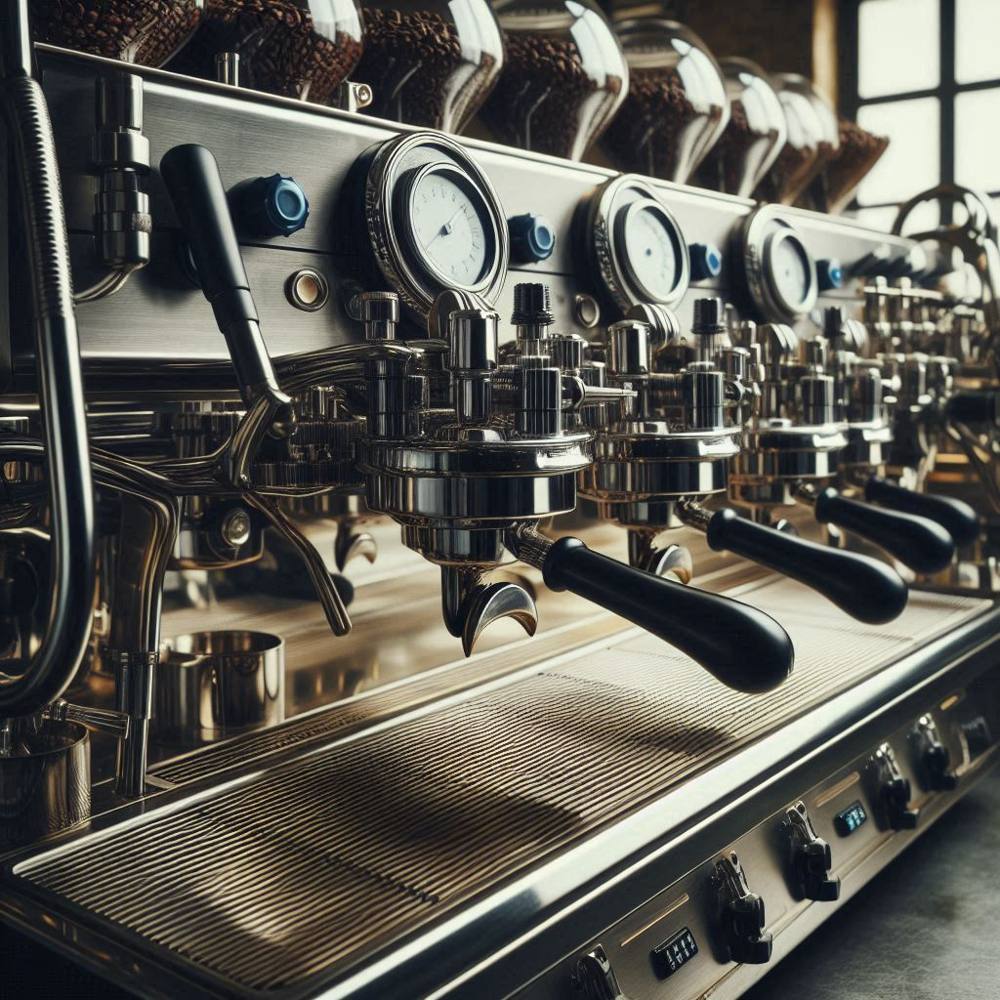
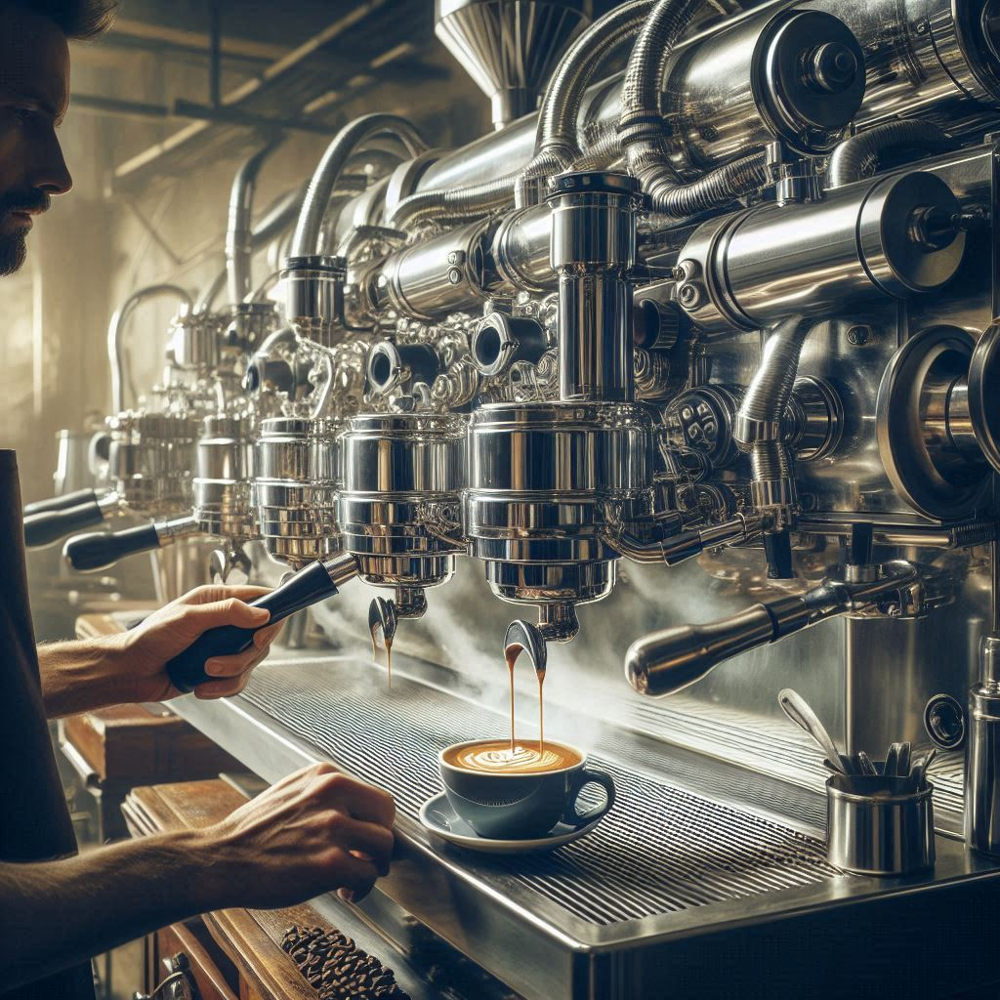

Sobre nosotros
En SiriusD Cafe, nos enorgullece ofrecer una amplia variedad de productos de café, desde espresso hasta frappés, todos elaborados con los mejores ingredientes.
Historia
Nuestra historia comienza con una pasión por el café y un deseo de compartirlo con el mundo. Hemos crecido hasta convertirnos en un referente en la industria.
Misión
Ofrecer una experiencia de café inigualable, combinando calidad con servicio excepcional. Siempre buscamos innovar y adaptarnos a nuestros clientes.
Visión
Ser líderes en la industria del café, ofreciendo productos y servicios que superen expectativas. Un lugar para la comunidad y momentos especiales.